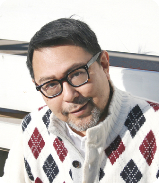
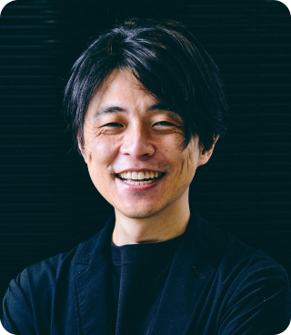

東大Week
@Marunouchi 2024
＊ 2024年度の開催は終了いたしました。 ご参加ありがとうございました。
Program
各セッション毎にお申込みをいただけます。ご希望のセッションをクリックいただき、
イベント管理サービスの「Peatix」からお申込みください。
事前にPeatixの会員登録が必要となります。
※開催日毎に実施時間・参加費等が異なります。ご注意ください。
会場：ユーザベースオフィス※参加費：1,000円（ワンドリンク+軽食付）
18:30 ~ 20:00
アカデミアとビジネスは“文理融合”で共創できるのか
More Detail More Detail +
-

本郷 和人
東京大学
史料編纂所 教授 -
松永 行子
東京大学
生産技術研究所 教授 -

呉 琢磨
NewsPicks Brand Design 編集長
会場：GARB Tokyo※参加費：500円（ワンドリンク付）
-
18:00 ~ 18:45
デジタルネイティブとカーボンニュートラルの同時実現への挑戦
More Detail More Detail +
江﨑 浩
東京大学 大学院
情報理工学系研究科 教授 -
19:15 ~ 20:00
ビジネスは社会課題を解決できるのか
ー歴史とジェンダーの視点からMore Detail More Detail +
山本 浩司
東京大学 大学院
経済学研究科 准教授
会場：ADRIFT by David Myers※参加費：500円（ワンドリンク付）
-
18:00 ~ 18:45
革新的新製品に対する消費者の製品評価・需要可能性を高めるためには？
～緑の珈琲がアリで無色のコーラがダメな理由～More Detail More Detail +
阿部 誠
東京大学大学院
経済学研究科 教授 -
19:15 ~ 20:00
多様で包摂的な都市空間デザインのための人流解析とシミュレーション
More Detail More Detail +
澁谷 遊野
東京大学大学院
情報学環 准教授
会場：GARB Tokyo※参加費：500円（ワンドリンク付）
-
18:00 ~ 18:45
これからの時代の子育て・保育
More Detail More Detail +
野澤 祥子
東京大学 大学院
教育学研究科附属発達保育実践政策学センター 准教授 -
19:15 ~ 20:00
大むかしの動物の謎
More Detail More Detail +
平沢 達矢
東京大学 大学院
理学系研究科 准教授
会場：ADRIFT by David Myers※参加費：500円（ワンドリンク付）
-
18:00 ~ 18:45
都市と人の持続可能なまちづくり
More Detail More Detail +
古賀 千絵
東京大学
先端科学技術研究センター
共創まちづくり分野 特任助教 -
19:15 ~ 20:00
時間展望と創造性：行動データによるハイブリッド・ワークの分析
More Detail More Detail +
稲水 伸行
東京大学 大学院
経済学研究科 准教授
アカデミアとビジネスは“文理融合”で共創できるのか
昨今、オープンイノベーションや異なる領域におけるコラボレーションが重視され、盛んになってきているアカデミアにおける異分野間連携の現状を提示すると共に、歴史上偉人たちが異なる才能をどうマネジメントしてきたか過去を振り返り、今後のビジネス創造における示唆を示します。
1960年東京生まれ。東京大学・同大学院で日本中世史を学ぶ。1988年に史料編纂所に入所。
助手・助教授を経て2012年に教授。歴史学の衰退に直面し、先ずは「歴史を好きになってもらう」事を眼目として行動している。
専門はバイオエンジニアリング。医学と工学を融合した細胞から臓器を設計・組み立てる組織工学研究を行う。近年、科学とデザイン・アート分野の融合に取り組む。平成30年度文部科学大臣表彰若手科学者賞。Attune「血管の音色」2019（松永研究室, DLX Design Lab, ベツァルエル美術デザインアカデミー）を発表。
フリー編集者を経て2015年にNewsPicksの広告事業部立ち上げに参画。2018年よりBrand Design 編集長に就任。2019年に若者向けタブロイド「HOPE by NewsPicks」を創刊。2020年に地域経済特化プロジェクト「NewsPicks Re:gion」を開始。新たなメディアビジネスの開発とともに、都市と地域の経済圏をつなぐ取り組みを行っている。
デジタルネイティブとカーボンニュートラルの同時実現への挑戦
手段としてのDXを認識し、カーボンニュートラルとスマートオフィスを地方展開を含む働き方改革、さらにグローバルな企業として実現するための具体的事例をその本質とともに議論をします。デジタルネイティブなインフラストラクチャーは、企業施設の物理的構造を抜本的に進化させることになります。各企業の財務構造と就業環境だけではなく、不動産産業の進化も起こりつつあります。
1987年 九州大学修士、(株)東芝 入社。1990年米国ニュージャージ州
ベルコア社、1994年米国ニューヨーク市 コロンビア大学
客員研究員。1998年10月 東京大学 助教授、2005年 東京大学
教授。
WIDEプロジェクト代表、MPLS-JAPAN代表、JPNIC理事長、日本データセンター協会
理事/運営委員会委員長、JNSA会長、IPTV
Forum理事長。工学博士(東京大学)。
ビジネスは社会課題を解決できるのか
ー歴史とジェンダーの視点から
企業の社会的責任（CSR）やESG投資は比較的新しい考えだと思われがちですが、ヨーロッパの歴史を紐解けば、ビジネスを社会課題の解決に役立てようという考えには少なくとも400年の歴史があることが分かります。ビジネスが社会課題を解決できるとして、具体的にどうすればいいのでしょうか？ジェンダーの観点も交えながら、最新の研究成果について共有し、残された課題について展望を示します。
慶應大学法学部を卒業後、ヨーク大学の歴史学研究科にて博士号を取得。ロンドン大学、ケンブリッジ大学などの研究員を経て、2016年より東京大学経済学研究科講師。2018年より現職。研究領域は、企業の社会的責任の歴史、ジェンダーの歴史、西洋経済史。2016年、歴史研究の支援と活性化を目的とした日本全国の大学を繋ぐ研究者組織「歴史家ワークショップ」を立ち上げ代表を務める。
革新的新製品に対する消費者の製品評価・需要可能性を高めるためには？
～緑の珈琲がアリで無色のコーラがダメな理由～
革新的なアイデアやイノベーションは、人にすぐ受け入れられることが難しいです。
これを『革新的新製品に対する消費者の製品評価・需要可能性を高めるためにはどうすればよいのか？』というマーケティングの文脈において、行動経済学、消費者心理の観点から紐解いてみます。透明のコーラという実際の失敗事例に基づいて、何が問題だったのかを考えることによって、ビジネスの分野以外でも使える汎用的なアプローチが見えてきます。
フンボルト大学（ドイツ）、UCLA、イェール大学、ニューサウスウェールズ大学（シドニー）、シンガポール国立大学にて、客員教授、准教授、研究員を歴任。
ノーベル経済学賞受賞者との共著を含め、マーケティング学術雑誌に論文を多数掲載。2003年にJournal
of Marketing
Educationからアジア太平洋大学のマーケティング研究者
第１位に選ばれる。日本マーケティング・サイエンス学会の代表理事、学会誌前編集長。専門は、マーケティング・サイエンス、消費者行動、行動経済学。
多様で包摂的な都市空間デザインのための人流解析とシミュレーション
昨今スマートフォンGPSデータをはじめとする大規模人流データ解析によって、都市空間のダイナミクスを捉えることが可能になってきています。人口流入と多様化が進む都市空間で、より多くの人が豊かな暮らしを享受して安心して暮らすことができるようにするためにはどのようなデザインが求められるのでしょうか。人流解析やシミュレーションを通じて、人々の行動や経験の格差やその要因を明らかにし、シナリオに応じた都市空間の多様性や包摂性の多角的な評価を可能とするシミュレーションモデルの構築に取り組んでいます。
東京大学大学院学際情報学府博士課程修了（博士・社会情報学）。東京大学大学院情報学環・特任助教、東京大学空間情報科学研究センター・准教授を経て、2024年より東京大学大学院情報学環・准教授。空間情報、社会情報学などを中心に、都市空間・デジタル空間での人々の行動の多様性や異質性、参加に関する研究に従事。
これからの時代の子育て・保育
社会の変化が大きな時代にどう子育てをすればよいのか、早期教育は必要なのかなど悩まれる方も多いかもしれません。急速な少子化を背景として、こども基本法の制定やこども家庭庁の設立など、子どもをめぐる政策も大きく動いています。こうした中、子育てや保育について、社会の変化に応じて意識変革が求められる部分もあれば、人が育つ・人を育てるという営みとして変わらない本質もあるでしょう。最近、改めて注目されている「非認知」「アタッチメント」の考え方もご紹介し、人が育つ・人を育てる営みとはどのようなものかを検討しつつ、これからの時代の子育て・保育のあり方について考えたいと思います。
2013年、東京大学大学院教育学研究科博士課程修了。博士（教育学、東京大学）。東京家政学院大学准教授を経て2016年より現職。内閣府「子ども・子育て会議」委員、厚生労働省「保育所等における保育の質の確保・向上に関する検討会」委員等を歴任。専攻は発達心理学・保育学。子どもの発達とウェルビーイングを支える保育の質や、保育者の専門性の発達について研究している。
大むかしの動物の謎
5.2億年前に現れた脊椎動物は、その歴史の中で上下に噛み合う顎や鰭、手足など、私たちヒトに見られる解剖学的構造を含む多様な形態を進化させてきました。その中では、恐竜のような、現在の地球上には見られないかたちを持つ動物もたくさん存在していたことが分かっています。そのような化石種をどのようなアプローチで研究するのか？ 過去の動物とその進化過程について解明を進めることで何が理解できていくのか？ どんなおもしろい謎が残されているのか？ 実際の研究例を紹介しながら、お話していきたいと思います。
2010年東京大学大学院理学系研究科博士課程修了。博士（理学）。理化学研究所基礎科学特別研究員・生命機能科学研究センター研究員等を経て2020年より現職。専門は古生物学と進化発生学の統合領域。特に脊椎動物の形態進化について、化石の精密解析と胚発生の細胞・遺伝子レベルの解析を駆使して解明を進めている。
都市と人の持続可能なまちづくり
私たちの健康は遺伝的な要因だけでなく、所得や学歴のようなミクロレベルの要因から、住んでいる地域の特徴や経済動向のようなマクロレベルの要因までが複雑に絡み合い影響を受けています。これらの社会的要因を総称して「健康の社会的決定要因（Social Determinants of Health: SDH）」と呼びます。環境と健康の関連についてどこまで明らかにされているのか、環境と人の双方が健康な未来の可能性について、社会疫学の視点で話題提供します。
千葉大学大学院医学薬学府先進予防医学共同専攻修了、博士（医学）。シャリテ医科大学（ベルリン）研究員、千葉大学予防医学センター特任研究員を経て現職。専門は社会疫学で、暴力の社会的決定要因の解明を進めている。現在は、都市とウェルビーイング、暴力、ストレスの関連について研究を展開。
時間展望と創造性：行動データによるハイブリッド・ワークの分析
オフィスワークとテレワークを組み合わせたハイブリッドワークが定着する中、クリエイティビティを高めるにはどのような働き方が求められるのでしょうか。本講演では、リアル・オンライン双方におけるワーカーの行動データをもとに、どのような時間と場所の使い方がクリエイティビティにつながるのかについて研究成果を報告します。その上で、これからの時代に求められる時間展望と働き方、さらには組織マネジメントのあり方についても考察します。
2003年東京大学経済学部卒業。2008年 東京大学大学院経済学研究科博士課程単位取得退学。筑波大学ビジネスサイエンス系准教授を経て、2016年より現職。博士（経済学）（東京大学, 2008年）。主な著作：『流動化する組織の意思決定』（東京大学出版会, 第31回 組織学会高宮賞 著作部門 受賞）。